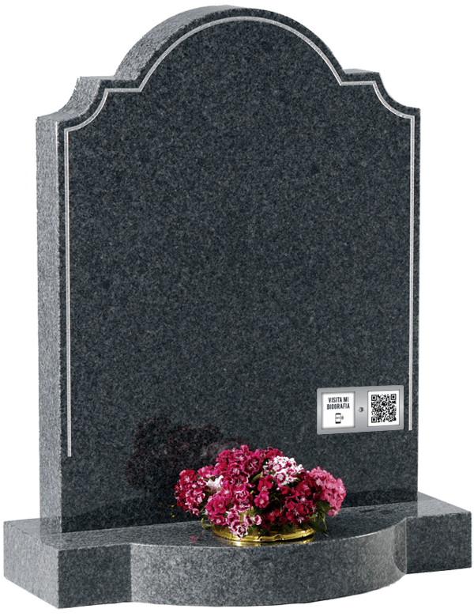
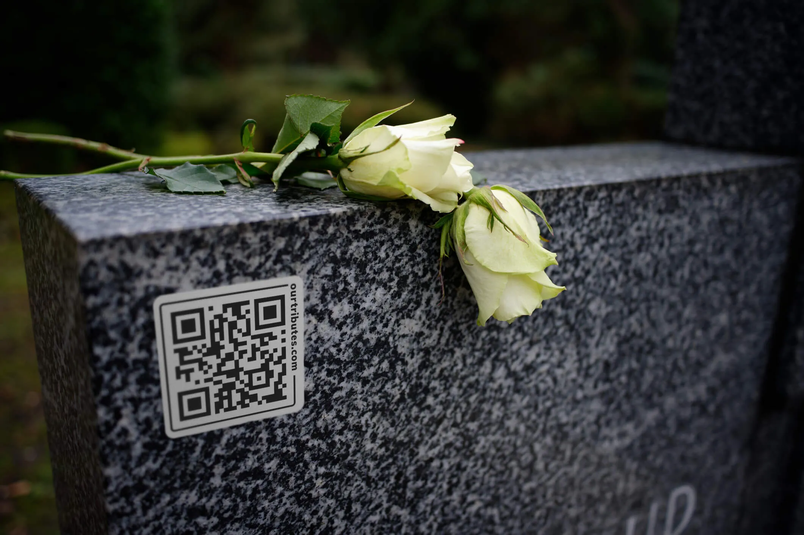
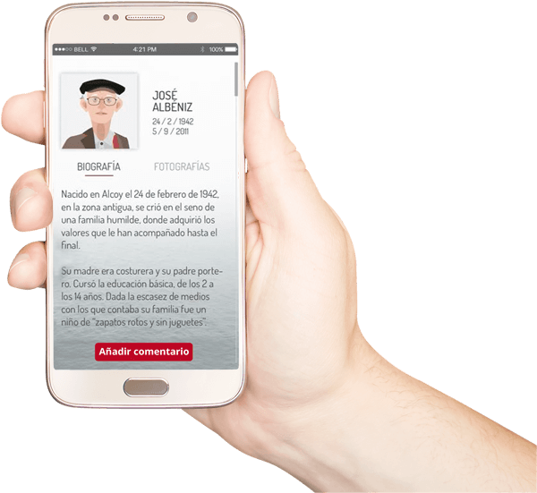

¿QUIENES SOMOS?
Somos una empresa dedicada a recordar los momentos mas lindos y especiales de tu familiar o amigos. me diante una pequeña placa donde conlleva un codigo QR , donde escaniandolo podras ver una pequeña y un breve resumen de su vida , acompañadolo con videos , gif y fotos donde podras ver a tu ser querido
Crea y diseña tu propia biografía o la de cualquier familiar contando la historia de vuestras vidas, creando así un lugar en Internet único e irrepetible donde potenciar el recuerdo.

La placa de aluminio o acero inoxidable se adhiere a la lápida y su biografía y memoria pueden desplegarse en tu celular.También tendrá una dirección www única en la que visitar esta memoria.
¿COMO FUNCIONAMOS?
Solicita tus códigos QR/NFC asociándolos a la biografía ya creada que selecciones. Te los enviaremos en los próximos días a la dirección postal que elijas cuando hagas tu pedido.

Adhiere el código QR/NFC a la lápida, columbario, urna u otra plataforma. Nuestros códigos están fabricados con metal y están resinados para garantizar su durabilidad.

Biografía y obituarios Celebra la vida de tu ser querido, sus logros, sus sueños, su familia. Biografía: Incorpora sus datos únicos Recuerdos:Su familia Árbol genealógico: Celebra a su familia y sus nexus con la historia pasada y futura